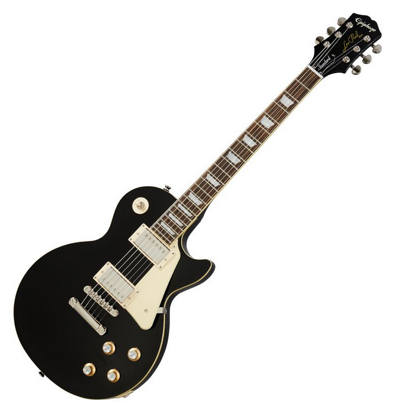
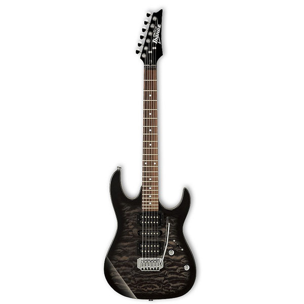
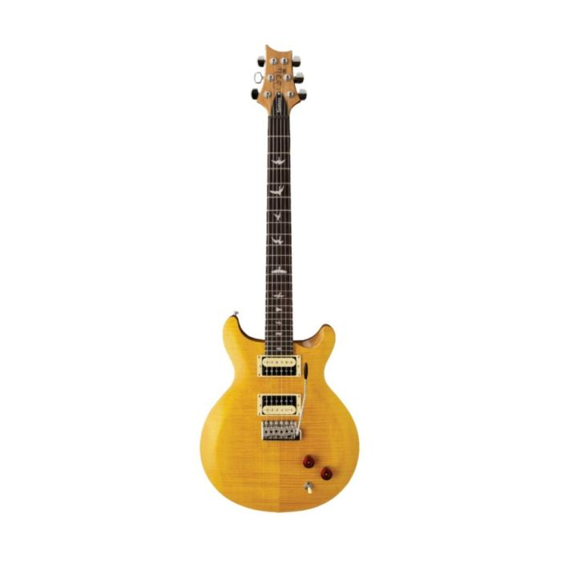
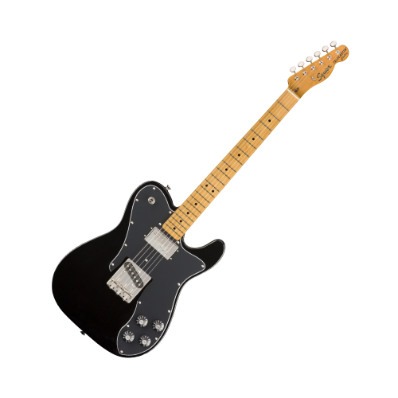

(502) 3567-9090
(502) 3567-9090
Fender Player Stratocaster HSS
- Acabado 3-Color Sunburst
- Construcción robusta para uso versátil: desde tonos limpios cristalinos hasta distorsión gracias al humbucker.
- Puente Tipo “2-Point Synchronized Tremolo” con selletas de acero doblado
Q 9,095.00

Epiphone Les Paul Standard 60's
- Con poderosos Probucker 2 y 3 humbuckers de voz vintage te dará un sonido brillante y claro
- El mástil en forma de C delgado de los 60 proporciona una excepcional jugabilidad, sintiéndose a la vez suave y cómodo en su agarre
Q 8,470.00

Ibanez TKS GIO
- Cuerpo de álamo
- Tipo de cuello: GRX
- Pastillas:PSND1, PSND-S, PSND2
Q 4,574.00

PRS SE Santana Yellow
- El conjunto de doble humbuckers de Santana ”S” proporciona a la guitarra una tonalidad especial e increíble
- u cuerpo está hecho a mano y con caoba sólida y cubierto con maple flameado, y una estética llamativa y única. El diapasón de palisandro 22 trastes está acoplado con un cuello de caoba ancho graso, ofreciendo una sensación de juego sin esfuerzo y total libertad en el diapasón entero
Q 8,065.00

Squier Classic Vibe 70s Telecaster
- Destacan el perfil de mástil “C” con radio de 9.5″ como muy cómodo y adecuado para estilos diversos
- Se elogia el Wide Range humbucker + single-coil por ofrecer un tono robusto pero versátil
- Herrajes vintage y acabado brillante en mástil generan una estética retro auténtica
Q 5,995.00